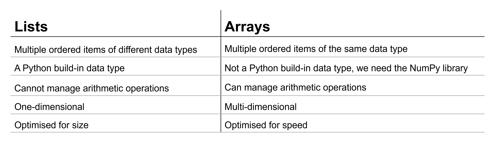
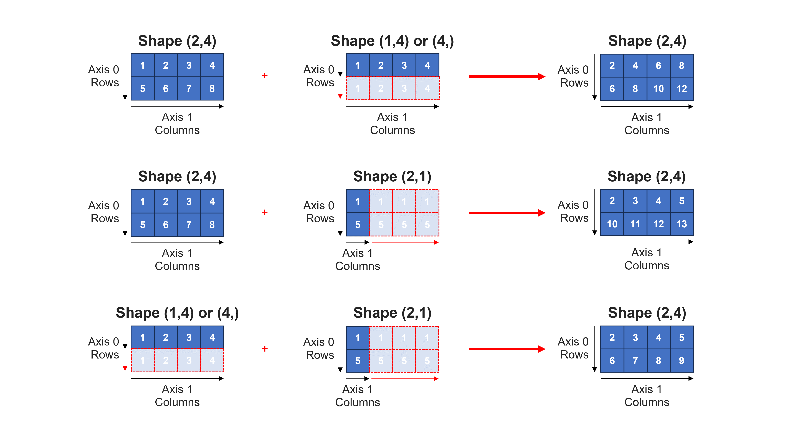

NumPy For Arithmetic Operations#
NumPy is the linear algebra library used for scientific computing.
Exercise 14
Import NumPy. Use convenient naming.
Solution to Exercise 14
import numpy as np
Arrays have a size, dimension, and shape#
The NumPy array stores a series of numerical data of the same data type and can perform mathematical operations.
Numpy arrays have a variety of properties:
size: the total number of elements
dimension:1D, 2D, 3D …
shape:the number of units along each dimension.
For a 1D array with shape (a,), a represents the total number of elements (axis 0).
For a 2D array with shape (a,b), a represents the number of rows (axis 0), and b represents the number of columns (axis 1).
For a 3D array with shape (a,b,c), a represents the number of layers (axis 0), b represents the number of rows in each layer (axis 1), and c represents the number of columns in each layer (axis 2).
{kind=link}
Creating arrays#
To create an array, use the np.array() function. See the figure above for examples.
Use array_name.size to get the size of a NumPy array as an integer value.
Use array_name.ndim to get the number of dimensions of a NumPy array as an integer value.
Use array_name.shape to get the shape of a NumPy array as an integer value.
Exercise 15
Compare:
array1D = np.array([1,2,3,4,5,6,7,8,9,10,11,12,13,14,15,16,17,18,19,20,21,22,23,24])
print(array1D) #print the 1D array that we created
print(array1D.size) #print the size of the 1D array that we created
print(array1D.ndim) #print the dimension of the 1D array that we created
print(array1D.shape) #print the shape of the 1D array that we created
with
array2D = np.array([[1,2,3],[4,5,6],[7,8,9],[10,11,12],[13,14,15],[16,17,18],[19,20,21],[22,23,24]])
print(array2D) #print the 2D array that we created
print(array2D.size) #print the size of the 2D array that we created
print(array2D.ndim) #print the dimension of the 2D array that we created
print(array2D.shape) #print the shape of the 2D array that we created
and
array3D = np.array([[[1,2,3],[4,5,6],[7,8,9],[10,11,12]],[[13,14,15],[16,17,18],[19,20,21],[22,23,24]]])
print(array3D) #print the 3D array that we created
print(array3D.size) #print the size of the 3D array that we created
print(array3D.ndim) #print the dimension of the 3D array that we created
print(array3D.shape) #print the shape of the 3D array that we created
Solution to Exercise 15
Array1D is a 1D array with 24 elements and shape (24,).
Array2D is a 2D array with 24 elements, 8 rows (axis 0), 3 columns (axis 1), and shape (8,3).
Array3D is a 3D array with 24 elements, 2 layers (axis 0), 4 rows (axis 1), 3 columns (axis 2), and shape (2,4,3).
Exercise 16
We determined the fraction of binding sites occupied for two membrane proteins for the same hormone. The results are in the table below:
[Hormone] (nM) |
Fraction of binding sites occupied - protein 1 |
Fraction of binding sites occupied - protein 2 |
|---|---|---|
0.2 |
0.048 |
0.291 |
0.5 |
0.110 |
0.487 |
1.0 |
0.224 |
0.669 |
2.0 |
0.467 |
0.732 |
5.0 |
0.632 |
0.891 |
10.0 |
0.715 |
0.948 |
20.0 |
0.832 |
0.971 |
50.0 |
0.929 |
0.991 |
Store this information in a NumPy array. Print the size, dimension, and shape of the array.
Solution to Exercise 16
Here’s one possible solution.
bindingsitesdata = np.array([[0.2,0.048,0.291], [0.5,0.110,0.487], [1.0,0.224,0.669], [2.0,0.467,0.732], [5.0,0.632,0.891], [10.0,0.715,0.948], [20.0,0.832,0.971], [50.0,0.929,0.991]]) #create an 8 x 3 array. The first item is "Hormone] (nM)", the second item is "Fraction of binding sites occupied - protein 1", and the third item is "Fraction of binding sites occupied - protein 2".
print(bindingsitesdata) #print the array that we created
print(bindingsitesdata.size) #print the size of the bindingsitesdata array that we created
print(bindingsitesdata.ndim) #print the dimension of the bindingsitesdata array that we created
print(bindingsitesdata.shape) #print the shape of the bindingsitesdata array that we created
Array of ones#
To create an array consisting of ones, use the np.ones(shape) function. Just pass it the shape of the output array.
Array of zeros#
To create an array consisting of zeros, use the np.zeros(shape) function. Just pass it the shape of the output array.
Array of sequential or evenly spaced values#
To create an array with evenly spaced numbers within a given interval, use np.arange(start, stop, step). Just pass it the start value (optional, the default is 0), the excluded end value, and the step size needed (optional, the default is 1).
To create an array using a fixed number of points over an interval, use np.linspace(start, stop, num). Just pass it the start value, the by default included end value (optional), and the number of points needed (optional, the default is 50).
Exercise 17
Compare:
array1Darange = np.arange(0, 10, 2)
print(array1Darange)
with
array1Dlinspace = np.linspace(0, 10, 5)
print(array1Dlinspace)
Solution to Exercise 17
Both generate 1D arrays, however:
the array created using arange has 5 evenly spaced elements, with steps of 2: 0, 2, 4, 6, and 8. The end value, 10, is not included.
the array created using linspace has 5 evenly distributed elements, with steps of 2.5: 0, 2.5, 5, 7.5, and 10. The end value, 10, is included.
Exercise 18
We want to perform an experiment using 20 evenly spaced temperature points between 4 and 50 °C (included). Use NumPy arrays to generate a list with data points.
Solution to Exercise 18
Here’s one possible solution.
temperaturedatapoints = np.linspace(4, 50, 20) #use `np.linspace(start, stop, num)`, with start = 4, stop = 50, and num = 20 to create an array with 20 evenly spaced temperature points between 4 and 50 (included)
print(temperaturedatapoints) #print the array that we created
Indexing and slicing for arrays#
Individual elements and sets of elements are extracted from an array by indexing and slicing. NumPy adopts and extends the indexing and slicing methods used in standard Python for sequence-based data types (e.g. a string, list, or tuple).
To select an element from a 2D array, specify both a row index and a column index, i.e. array_name[index_row, index_column].
To slice elements from a 2D array, specify both a row start and end index and a column start and end index, i.e. array_name[start_index_row:end_index_row, start_index_column:end_index_column].
To select an entire row or column, simply specify the index of the row or column and providing : for the other index, e.g. array_name[0,:] to access row 0 or array_name[:,0] to access column 0.
{kind=link}
Exercise 19
Use the NumPy array we generated earlier for the following data set:
[Hormone] (nM) |
Fraction of binding sites occupied - protein 1 |
Fraction of binding sites occupied - protein 2 |
|---|---|---|
0.2 |
0.048 |
0.291 |
0.5 |
0.110 |
0.487 |
1.0 |
0.224 |
0.669 |
2.0 |
0.467 |
0.732 |
5.0 |
0.632 |
0.891 |
10.0 |
0.715 |
0.948 |
20.0 |
0.832 |
0.971 |
50.0 |
0.929 |
0.991 |
Select and show the fraction of binding sites occupied for protein 2 when [Hormone] (nM) = 5.0 nM.
Select and show the fraction of binding sites occupied for both proteins when [Hormone] (nM) = 5.0 nM.
Select and show the fraction of binding sites occupied for protein 2 for all [Hormone] (nM).
Solution to Exercise 19
Here’s one possible solution.
print(bindingsitesdata[4,2]) #select and print the third element on the fifth row. Remember that indices start from 0!
print(bindingsitesdata[4,1:3]) #select and print the second and third elements of the fifth row. Remember that indices start from 0 and that when we specify the end item, it goes up to but does not include that item!
print(bindingsitesdata[:,2]) #select and print the third column. Remember that indices start from 0!
The axis parameter in sum, mean, standard deviation …#
Useful functions in NumPy include the np.sum(), np.mean, and np.std(). They are used to create the sum, mean, and standard deviation of all elements, the elements of each column, or the elements of each row of a given array. Their arguments are (array_name, axis). The default axis=None will e.g. sum all the elements of the array. For a 2D array, with axis=0, we sum along the 0th dimension and get the sum of elements of each column; with axis=1, we sum along the 1st dimension and get the sum of the elements of each row.
{kind=link}
Exercise 20
We determined the serum calcium levels (mg/dl) of blood from two patients with chronic renal insufficiency on maintenance hemodialysis. We repeated the experiment 10 times to obtain a more accurate representation. The results can be observed in the table below:
Experiment |
Serum calcium level (mg/dl) - patient 1 |
Serum calcium level (mg/dl) - patient 2 |
|---|---|---|
1 |
8.53 |
10.12 |
2 |
9.21 |
9.87 |
3 |
7.69 |
9.49 |
4 |
8.13 |
10.39 |
5 |
7.84 |
10.01 |
6 |
9.05 |
9.85 |
7 |
8.33 |
9.34 |
Store this information in a 2D NumPy array. Calculate the mean and standard deviation for each patient.
Solution to Exercise 20
Here’s one possible solution.
serumcalciumleveldata = np.array([[1, 8.53, 10.12],[2, 9.21, 9.87],[3, 7.69, 9.49],[4, 8.13, 10.39],[5, 7.84, 10.011],[6, 9.05, 9.85],[7, 8.33, 9.34]]) #create a 7 x 3 array. The first item is "Experiment", the second item is "Serum calcium level (mg/dl) - patient 1", and the third item is "Serum calcium level (mg/dl) - patient 2".
serumcalciumlevelmean = np.mean(serumcalciumleveldata[:,1:3], axis=0) #calculate the means of the elements of each column with patient data for the serumcalciumleveldata array we created
serumcalciumlevelstdv = np.std(serumcalciumleveldata[:,1:3], axis=0) #calculate the standard deviations of the elements of each column with patient data for the serumcalciumleveldata array we created
print(serumcalciumlevelmean) #print the means
print(serumcalciumlevelstdv) #print the standard deviations
Arithmetic operations for arrays and lists#
Both arrays and lists are used to store data, but there are important differences:
{kind=link}
Array arithmetic operations work much like standard scalar math and operates on an element by element basis.
Exercise 21
Compare:
arraya = np.array([1,2,3,4]) #create array a (1D) with 4 elements
arrayb = np.array([3,4,5,6]) #create array b (1D) with 4 elements
print(2+arraya) #print 2 plus array a (1D)
print(2*arraya) #print 2 times array a (1D)
print(arraya+arrayb) #print array a (1D) plus array b (1D)
print(arraya*arrayb) #print array a (1D) times array b (1D)
with
lista = [1,2,3,4] #create list a with 4 elements
listb = [3,4,5,6] #create list b with 4 elements
print(2+lista) #print 2 plus list a
print(2*lista) #print 2 times list a
print(lista+listb) #print list a plus list b
print(lista*listb) #print list a times list b
and
arrayc = np.array([[1,2],[3,4]]) #create array c (2D) with 4 elements
arrayd = np.array([[5,6],[7,8]]) #create array d (2D) with 4 elements
print(2+arrayc) #print 2 plus array c (2D)
print(2*arrayc) #print 2 times array c (2D)
print(arrayc+arrayd) #print array c (2D) plus array d (2D)
print(arrayc*arrayd) #print array c (2D) times array d (2D)
Tip: Remove code lines that generate an error!
Solution to Exercise 21
We can sum (‘+’) arrays with each other or a scalar. It operates on an element by element basis.
We cannot sum lists with a scalar. We get an error message: TypeError: unsupported operand type(s) for +: ‘int’ and ‘list’!
We cannot sum lists with each other: the ‘+’ operator concatenates two lists. It appends one list at the end of the other list and results in a new list as output.
We can multiply (‘*’) arrays with each other or a scalar. It operates on an element by element basis.
We can multiply lists with a whole number. It repeats the values in the list a certain number of times.
We cannot multiply lists with each other. We get an error message: TypeError: can’t multiply sequence by non-int of type ‘list’!
Broadcasting#
Because array math occurs element by element, arrays normally have to be the same shape for math operations between them to succeed.
The exception occurs when one of the arrays is the same shape as the other except that the size of one or more of the dimensions is reduced to 1 (or completely absent). The array will be conceptually extended, repeating values as necessary. This extension process is called broadcasting and demonstrated in the figure below:
{kind=link}
Exercise 22
Create NumPy arrays and calculate their sums to verify the information shown in the figure above.
Solution to Exercise 22
Here’s one possible solution.
arrayk = np.array([[1,2,3,4],[5,6,7,8]]) #create array k (2D) with 8 elements
print(arrayk) #print the 2D array that we created
print(arrayk.shape) #print the shape of the 2D array that we created. Array k has 2 rows and 4 columns.
arrayl2D = np.array([[1,2,3,4]]) #create array l2D (2D) with 4 elements
print(arrayl2D) #print the 2D array that we created
print(arrayl2D.shape) #print the shape of the 2D array that we created. Array l2D has 1 row and 4 columns.
arrayl1D = np.array([1,2,3,4]) #create array l1D (1D) with 4 elements
print(arrayl1D) #print the 1D array that we created
print(arrayl1D.shape) #print the shape of the 1D array that we created. Array l1D has 4 elements.
arraym = np.array([[1],[5]]) #create array m (2D) with 2 elements
print(arraym) #print the 2D array that we created
print(arraym.shape) #print the shape of the 2D array that we created. Array m has 2 rows and 1 column.
print(arrayk+arrayl2D) #print array k (2D) plus array l2D (2D). Array l2D is conceptually extended along axis 0 to create an array with two rows, i.e. ([[1,2,3,4],[1,2,3,4]]) and then added to array k.
print(arrayk+arrayl1D) #print array k (2D) plus array l1D (1D). Array l1D is conceptually extended along axis 0 to create an array with two rows, i.e. ([[1,2,3,4],[1,2,3,4]]) and then added to array k.
print(arrayk+arraym) #print array k (2D) plus array m (2D). Array m is conceptually extended along axis 1 to create an array with four columns, i.e. ([[1,1,1,1],[5,5,5,5]]) and then added to array k.
print(arrayl2D+arraym) #print array l2D (2D) plus array m (2D). Array l2D is conceptually extended along axis 0 to create an array with two rows, i.e. ([[1,2,3,4],[1,2,3,4]]). Array m is conceptually extended along axis 1 to create an array with two rows, i.e. ([[1,1,1,1],[5,5,5,5]]).
print(arrayl1D+arraym) #print array l1D (1D) plus array m (2D). Array l1D is conceptually extended along axis 0 to create an array with two rows, i.e. ([[1,2,3,4],[1,2,3,4]]). Array m is conceptually extended along axis 1 to create an array with two rows, i.e. ([[1,1,1,1],[5,5,5,5]]).
Looping for arrays#
For loops can be used to iterate over arrays.
But, iterating over an array does not yield the scalar elements in sequence. Instead a loop accesses in sequence the subarrays from which the array is constructed.
To get the individual scalar elements, two loops are required, one over the array of subarrays and the other over the subarrays themselves:
for subarray in array:
for element in subarray:
statement(s)
Alternatively, to access individual scalar elements of a multi-dimensional array in a single loop, use np.ravel(array_name), which is equivalent to reshaping the array into one dimension:
for variable in np.ravel(array_name):
statement(s)
Exercise 23
Compare:
arrayz = ([[0,1,2], [3,4,5], [6,7,8], [9,10,11]])
for x in arrayz:
print(x)
with
for subarrayz in arrayz:
for x in subarrayz:
print(x)
and
for x in np.ravel(arrayz):
print(x)
Solution to Exercise 23
The first loop accesses in sequence the subarrays from which array z is constructed. The other two loops access all elements from array z.